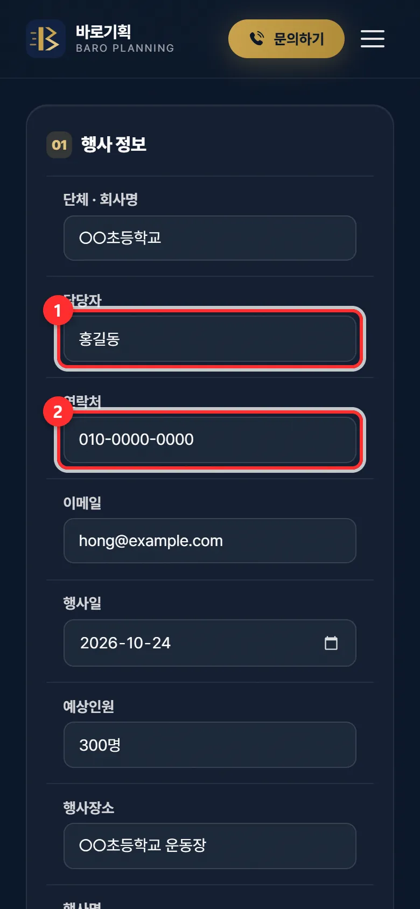
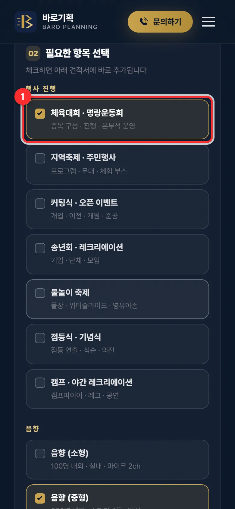
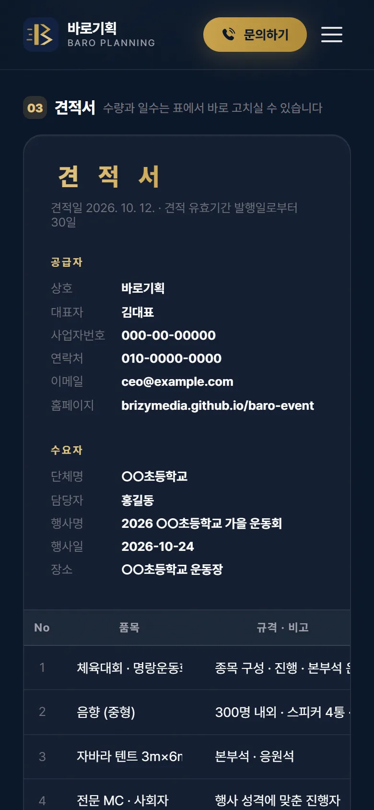
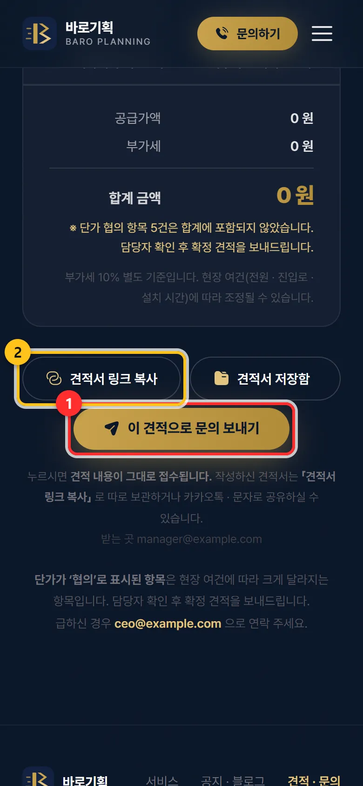

자동 견적서 — 손님용
손님이 필요한 항목을 직접 골라 견적 문의를 보내는 화면입니다. 보내면 대표님 메일로 옵니다.
우리홈페이지주소/quote.html언제 쓰나요
- 전화로 「대충 얼마예요?」 묻는 손님에게 — 이 주소를 문자 · 카톡으로 보내 주세요.
- 손님이 항목을 골라 보내면, 무엇이 필요한지 정리된 채로 메일이 옵니다. 다시 묻지 않아도 됩니다.
직인 · 할인 칸 · 인쇄 단추 · 항목 추가 단추가 숨겨져 있고, 품목 이름과 단가는 손님이 고칠 수 없습니다. 손님은 수량과 일수만 고칩니다. 우리 양식이 다른 업체 비교견적용으로 쓰이지 않게 막아 둔 것입니다.
이렇게 하세요
손님에게 주소를 보냅니다
문자나 카톡에
우리홈페이지주소/quote.html을 붙여 보내면 됩니다. 홈페이지 메뉴의 「견적」을 눌러도 같은 화면이 열립니다.주의주소 뒤에
?admin=1이 붙은 주소(관리자용)는 손님에게 보내지 마세요.손님이 행사 정보를 적습니다
단체 · 회사명, 담당자, 연락처, 이메일, 행사일, 인원, 장소, 행사명, 문의 내용을 적습니다. 담당자와 연락처는 꼭 적어야 보내집니다.

① 담당자 ② 연락처 — 둘은 꼭 적어야 합니다 필요한 항목에 체크합니다
「필요한 항목 선택」에서 체크하면 아래 견적서 표에 바로 들어갑니다. 텐트 · 마이크처럼 개수가 있는 항목은 체크 아래 수량 칸에 숫자를 넣습니다.

체크하면 견적서에 바로 추가됩니다 견적서 표를 확인합니다
단가가 아직 정해지지 않은 항목은 금액이 「협의」로 나오고 합계에서 빠집니다. 그래서 손님 화면의 합계는 0원으로 보일 수 있습니다. 대표님이 단가를 넣어 확정 견적서를 보내 드리는 구조입니다.

손님이 만든 견적서 — 금액은 대표님이 확인 뒤 확정 「이 견적으로 문의 보내기」
손님이 이 견적으로 문의 보내기를 누르면 「견적 문의가 접수되었습니다!」 안내가 뜨고, 대표님 메일로 견적 내역이 옵니다. 메일 받은 뒤의 일은 문의가 오면을 보세요.
견적서 링크 복사는 손님이 지금 만든 견적서를 주소로 복사해 따로 보관하거나 카톡으로 나눌 때 씁니다.

① 문의 보내기 ② 견적서 링크 복사
자주 하는 실수 · 질문
손님이 「자동 전송에 실패했습니다」라고 해요
인터넷이 잠깐 끊긴 경우입니다. 그 안내에서 「확인」을 누르면 손님 폰의 메일 앱이 열리고 내용이 채워집니다. 거기서 보내면 똑같이 접수됩니다. 손님이 어려워하면 전화로 받아 주세요.
손님 화면에서 단가를 보여 주고 싶어요
품목표의 단가는 큰길브리지가 넣습니다. 보여 줄 단가가 있으면 품목과 금액을 정리해 보내 주세요(계약한 요금제에 따라 다를 수 있습니다).
손님이 항목을 안 고르고 보내도 되나요?
됩니다. 항목을 고르지 않아도 문의 내용만 적으면 보내집니다. 둘 다 비어 있으면 「항목을 고르거나, 문의 내용을 적어주세요」라고 나옵니다.